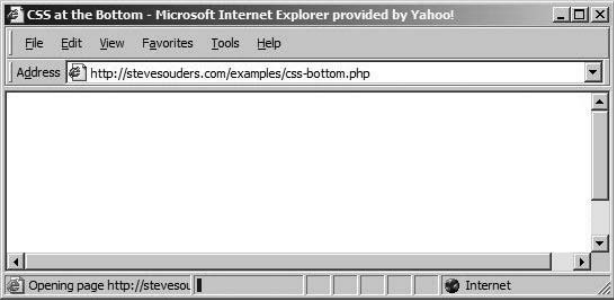
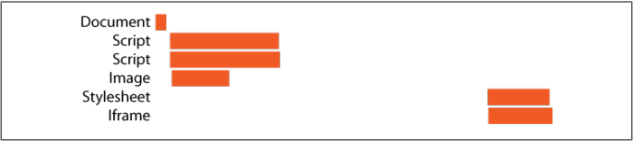
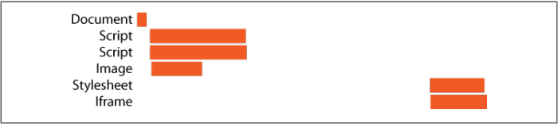
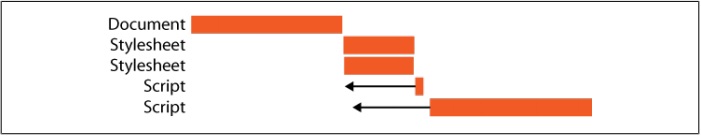

Web Performance
An optimization checklist
Created by xiad - https://github.com/jiubao
Part 1
TTFB & Resource
CDN
Content Delivery Network
- Reduce distance between users and resources
- Browser maximum concurrent http connections to same hostname
- Browser cache
Expire Header
Cache-Control
| 1 year | Cache-Control: public, max-age=31536000 |
| 1 week | Cache-Control: public, max-age=604800 |
Minify & Gzip
Minify your JavaScript source code.
Gzip your scripts and stylesheets.
Resources loading order
Put Stylesheets at the Top
FOUC (flash of unstyled content)
Put your stylesheets in the document HEAD using the LINK tag.
Put Scripts at the Bottom
Move scripts to the bottom of the page.
Load Scripts Without Blocking
 

Position inline scripts
Inline script block
Move Inline Scripts to the Bottom
Danger: Stylesheet Followed by Inline Script
Inline scripts are blocked by stylesheets
Split code
- Webpack
- Browserify
- Rollup
- Parcel
first patch
- Only include reachable code
- First page or even first screen
- Move un-used code to async patch
Split by router
DllReference
balance patches
Webpack4
- New chunk can be shared OR modules are from the node_modules folder
- New chunk would be bigger than 30kb (before min+gz)
- Maximum number of parallel requests when loading chunks on demand would be lower or equal to 5
- Maximum number of parallel requests at initial page load would be lower or equal to 3
webpack bundle analyzer

Tree Shaking
Native import & export
Chrome 61
Cache
Offline package
Api data pre-fetch
Data cache
localStorage
Part 2
User experience
RAIL
Response . Animation . Idle . Load
0 ~ 16ms
- 60 frames per second
- 16ms per frame
It takes time for browser to paint new frame to screen.
- 10ms to produce a frame
0 ~ 100ms
Respond to user actions within this time window and users feel like the result is immediate. Any longer, and the connection between action and reaction is broken.
100 ~ 300ms
Users experience a slight perceptible delay.
More than 1000ms
Beyond 1000 milliseconds (1 second), users lose focus on the task they are performing.
More than 10000ms
Beyond 10000 milliseconds (10 seconds), users are frustrated and are likely to abandon tasks. They may or may not come back later.
Response
Process events in under 50ms
- Process user input events within 50ms to ensure a visible response within 100ms.
- For actions that take longer than 50ms to complete, always provide feedback.
Animation
Produce a frame in 10ms
Produce each frame in an animation in 10ms or less. Technically, the maximum budget for each frame is 16ms (1000ms / 60 frames per second ≈ 16ms), but browsers need about 6ms to render each frame, hence the guideline of 10ms per frame.
Idle
Maximize idle time
- Use idle time to complete deferred work.
- Perform work during idle time in 50ms or less.
- User interaction should always take the highest priority and interrupt the idle time work.
Load
Deliver content and become interactive in under 5 seconds